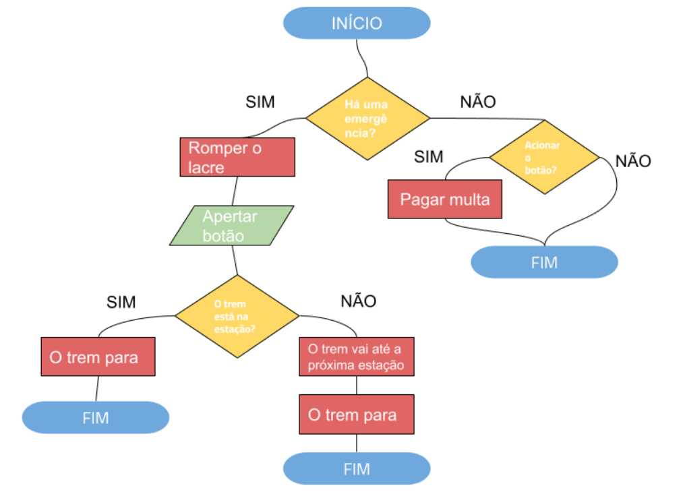
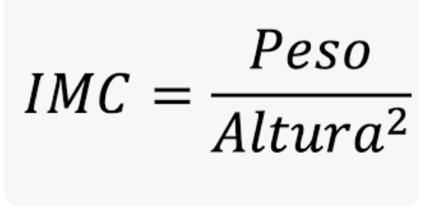
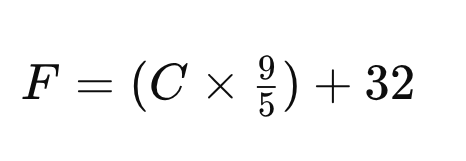
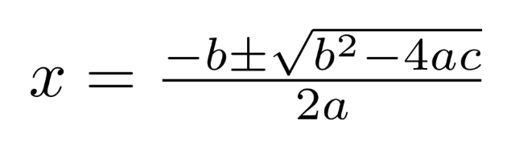
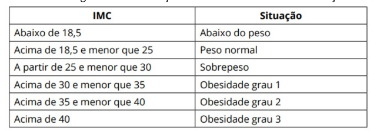

%%{init: {'theme': 'default', 'themeVariables': { 'fontSize': '32px' }}}%%
flowchart LR
A[/Inputs: x1, x2/] --> B[Operações: xt = x1 + x2]
B --> C[/Output: xt/]
Programação no R - Aula 2
Disciplina: Lógica da programação (de computadores) e análise de dados no R
Prof. Maurício Garcia de Camargo. IO-FURG.
2025-09-05
Algoritmos
Algoritmo é uma série de passos lógicos para resolver um problema.
Exemplos: receita de um bolo, trocar um pneu, somar dois números.
Formas de representação de algoritmos:
1. Textual
2. Fluxograma
3. Linguagem de programação
1. Representação Textual de algoritmos
Tarefa: somar dois números.
Passo a passo:
- (INPUT) Pegue os dois números (x1 e x2)
- (OPERAÇÃO) Realize a soma (xt = x1 + x2)
- (OUTPUT) Devolva o resultado (xt)
Dica
Dica: ao escrever em texto, procure usar verbos no imperativo (pegue, calcule, devolva) ao nomear inputs/outputs**.
2. Representação de algoritmos por Fluxogramas
O fluxograma do nosso programa possui
entradas → operações → saída
de forma visual.
Exemplo de fluxograma mais complexo

3. Algoritmos como Linguagens de programação
Pode ser implementado em diferentes linguagens: BASIC, Pascal, Java, Python, R, etc.
A lógica da programação (objetivo desta aula) é universal para todas as linguagens. Mudam apenas a sintaxe e a semântica.
Um algoritmo pode ser implementado de diferentes maneiras com a mesma linguagem, criando assim diferentes programas com os mesmos procedimentos.
Relembrando tipos de dados
- Numérico (x = 12): Operações: + - * / ^
- String (s = ‘olá!’): Operações: paste(s1,s2)
- Lógico (TRUE ou FALSE). Pode ser abreviado (T ou F). Operações: < > <= >= ==.
Funções
Funções existem em todas as linguagens de programação e funcionam como um programa inteiro, podendo conter INPUTS, OPERAÇÕES e OUTPUTS.
A estrutura de uma função no R
minha_funcao = function(input1, input2) {
… operações …
return(output)
}
- Minha_funcao é o nome da funcão.
- { } representam o início e o fim da função.
- Function e return: palavras reservadas do R.
- Operações são os cálculos que geram o output.
Exemplos de funções no R
Exemplo 1: Função para somar dois números.
Exemplo 2: Função para concatenar duas strings.
Exercícios de funcões no R
Exercício 1: Crie uma função que receba dois números e realize a multiplicação entre eles.
Exercício 2: Escreva uma função que receba três números e imprima a média deles.
Exercício 3: Crie uma função que receba dois números (a e b) e eleve o valor de a pelo de b.
Exercício 4: Crie uma função que receba o valor do raio e devolva o valor da circunferência de um círculo.
Mais exercícios de funcões no R
Exercício 5: Crie uma função que receba o valor do raio e devolva o valor da circunferência e da área de um círculo.
Exercício 6: Crie uma função que receba do usuário a sua altura e o seu peso e mostre na tela o seu Índice de Massa Corporal (IMC):

Mais exercícios de funcões no R
Exercício 7: Faça um programa que receba do usuário um valor de temperatura em graus Célsius e mostre na tela o valor transformado em graus Fahrenheit:

Exercício 8: Crie uma função que receba um valor em Dólar e converta o valor para Real, considerando que 1 Dólar = 5,7 reais.
Mais exercícios de funções no R
Exercício 9: A partir da fórmula quadrática, crie uma função que receba os valores de a, b e c e devolva as duas raizes quadráticas.

Estruturas de Condição em R
Estruturas de condição permitem que o programa tome decisões com base em uma verificação lógica.
Em R, a verificação lógica resulta em TRUE (verdadeiro) ou FALSE (falso).
Exemplo:
Estrutura básica if
Usada quando queremos executar um bloco de código apenas se uma condição for verdadeira.
Sintaxe:
Exemplo:
Estrutura if…else
Permite executar um código quando a condição é verdadeira e outro quando é falsa.
Sintaxe:
Exemplo:
Estrutura if…else if…else
Permite testar várias condições em sequência.
Sintaxe:
if (condição1) {
# código se condição1 for verdadeira
} else if (condição2) {
# código se condição2 for verdadeira
} else {
# código se nenhuma condição for verdadeira
}Exemplo:
Exercícios de if…else
Exercício 10: Escreva uma função que receba do usuário um valor numérico e mostre na tela se é positivo ou negativo.
Exercício 11: Escreva um código que leia um número inteiro (variável num) e verifique:
- se é positivo, imprima “Número positivo”
- se é negativo, imprima “Número negativo”
- se for zero, imprima “Número neutro”
Exercício 12: Crie uma função que receba do usuário um valor e mostre na tela se é par ou impar (use o operador %%).
Exercícios de if…else
Exercício 13: Crie uma função que receba uma idade e retorne: “Criança” se menor que 12
“Adolescente” se entre 12 e 17
“Adulto” se entre 18 e 59
“Idoso” se 60 ou mais
Mais exercícios de if…else
Exercício 14: Crie uma função que receba o peso e a altura de uma pessoa e determine a sua situação segundo o IMC (veja exercício 7), conforme a tabela abaixo:
